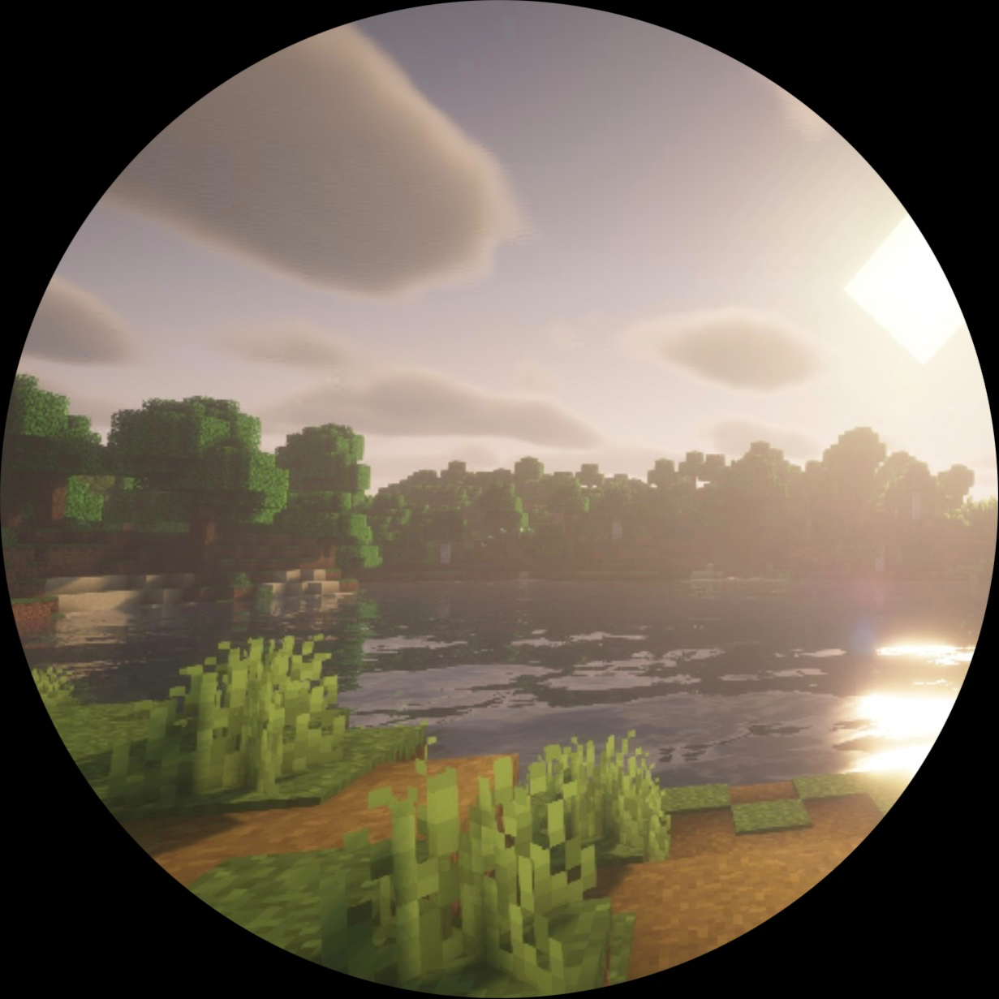

欢迎使用 macOS 网页版
声明：
- 本项目与 Apple Inc. 无任何关系
- 本项目绝不附属于 Apple Inc.
- 项目中的 siri 与 Apple 的智能助手 Siri 无任何关系
- 本项目中的部分 UI 组件来源于 https://uiverse.io/
- 项目图标由豆包AI生成
- 本项目原创作者 Minecraft_goose，灵感来源于 Win12网页版
- 本项目网址为 https://minecraftgoose.github.io/macos或https://macos.netlify.app不保证镜像链接安全
- 如果你发现 bug 或想加一些功能，欢迎到 kimi社区搜索Minecraft_goose或提交 issues
开发人员
他们都在 Kimi 社区（包括间接开发者）
Minecraft_goose
主开发者
界合创新
小宁AI开发者，Siriagent支持者
影箜 shadow kong
Safari开发者
琪初
天气API提供者
Apple Office
灵动岛底层开发者

longmoon
待办开发者
Q: 支持PWA吗
A: 你来晚了⊙▂⊙，已经暂停对PWA的支持¬_¬
Q: 动画经常缺失？
A: 这是一个历史遗留 bug，正在尝试修复。
Q: 软件太少？
A: 我们一直在优化系统，后续可能会推出 App Store。
2026/7/11
v1.0.2
- 修复 Dock 指示器显示问题
- 优化窗口动画，更加平滑流畅
- 开机动画改为 3 秒苹果 Logo + 进度条
- 壁纸支持每日必应壁纸自动更新
- 扩大窗口红绿灯点击区域，操作更便捷
- 修复动态图标与窗口状态同步问题
- 提升整体稳定性和性能
忘了
v1.0.14
- 新增 App Store
2026/5/5
v1.0.1
- Siriagent 上线
- Gooseglass 上线
2026/4/30
v1.0.07
- 突破性能瓶颈
- Siri UI 2.0
- 超级灵动岛 2.0
- 动画系统 2.0
- macOS 网页版满月庆祝
- Goose UI 2.0
2026/4/26
v1.0.020
- 修复AI问题
- 新增灵动岛
- 优化动画
2026/4/24
v1.0.010
- 删掉了PWA
- 加了一个dock栏
- 优化动画
- 新增天气应用
- Safari升级
2026/4/18
v1.0.000
内测结束，macOS 正式发布
- 更新了 Siri 的 UI
- 添加了"关于"应用
2026/4/11
v0.9
- 删掉了 siri 的跑马灯
- 优化窗口动画
- 新增控制中心
2026/4/4
v0.8
- 添加了 siri
- 添加了防入侵浏览器
2026/4/3
v0.7
- 添加壁纸
- 添加图标
2026/4/2
v0.5-beta
- 调整 dock 栏
- 代码模块化
2026/4/1
v0.3
《父辈的天空》？81192？
愚人节快乐
愚人节快乐
2026/3/28
v0.1
Trae 写出了底层框架
在此基础上，macOS 被逐步搭建...
在此基础上，macOS 被逐步搭建...